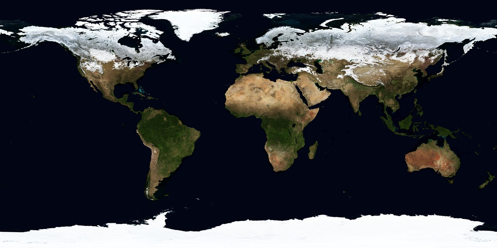
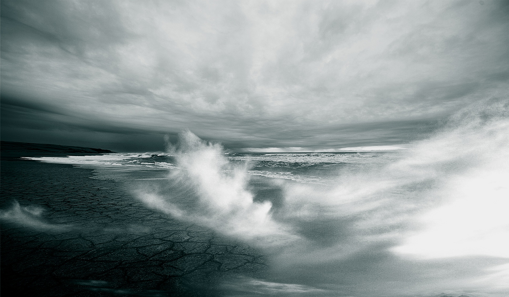
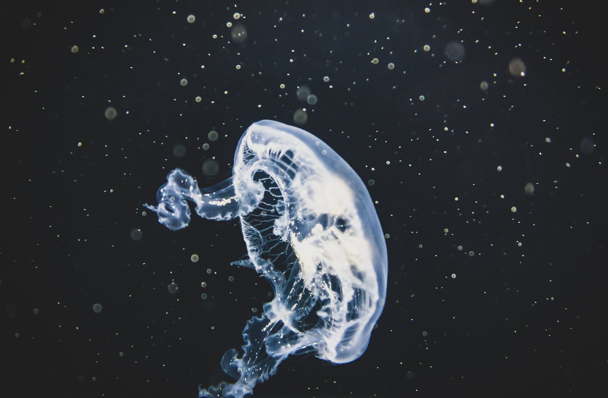

Tout d'abord, qu'est-ce que le cimat ?
On en parle beaucoup :
il s'agit de la moyenne sur une longue échelle de temps - disons une trentaine d'années - des observations météorologiques telles que la température, l'ensoleillement et les précipitations. Si la météo change vite, elle reste en général proche de sa moyenne climatique. Il fait chaud et sec dans les déserts, doux et humide en bord de mer, tempéré dans nos contrées et plutôt froid dans les régions nordiques... Un climat donné est associé à un environnement et à une certaine végétation. On peut définir un climat local, à l'échelle d'un pays ou d'une région, et le climat d'une planète. Sur Terre, il est aujourd'hui caractérisé par une température moyenne d'environ 15°C.
Mais c'est vrai :
le climat a toujours changé ! Il ne cesse d'évoluer depuis la formation de la Terre, il y a quatre milliards d'années. Les roches s'érodent et se forment ; la vie apparaît en mer, puis sur terre ; des volcans entrent en éruption... Les paysages changent au fil de l'histoire de notre planète. Ils sont peuplés d'espèces qui, elles aussi, évoluent au cours du temps : des bactéries aux eucalyptus et aux koalas en passant par les fougères et les dinosaures... A chaque ère géologique ses paysages, sa faune et sa flore, mais aussi son
climat !
Les
paléoclimatologues étudient justement les climats passés de notre planète. Ils jouent les détectives et mettent au point d'incroyables méthodes qui leur permettent par exemple de retracer l'évolution des températures ou du taux de dioxyde de carbone dans l'atmosphère.
Leurs secrets seront dévoilés
ici.
Mais en attendant, je vous invite à les croire et à vous laisser porter par leurs histoires :
 Au commencement...
La Terre est née il y a 4 567 000 000 ans
Au commencement...
La Terre est née il y a 4 567 000 000 ans, par collision de poussières d'étoile. Des fragments de plus en plus gros se cognent et s'assemblent pour former notre planète : un amas de roche en joyeux bordel. La roche se concentre en une boule très compacte qui tourne et s'effondre sur elle-même à cause de la gravité. Les éléments radioactifs qui la composent se désintègrent et produisent de la chaleur qui s'accumule jusqu'à fondre une partie de la planète : le fer et le niquel se liquéfient et forment un
noyau de fluide qui crée un champ magnétique autour de la Terre.
Ce champ magnétique nous protège du
vent solaire : des jets de plasma expulsés par le Soleil qui contiennent des ions et des électrons, c'est à dire de la matière chargée d'électricité.
Lorsqu'une éruption solaire atteint les pôles magnétiques de la Terre, elle crée des aurores boréales ou australes !
Revenons à notre histoire. Une fois le noyau de la Terre formé, la collision avec des astéroïdes ou de petites planètes échauffent encore la surface de notre planète, qui fond de plus belle et forme un
immense océan de magma.
Ce magma relache des gaz : beaucoup d'azote, de dioxyde de carbone, mais aussi de l'ammoniac, du méthane, ou de la vapeur d'eau. Ils constituent
une première atmosphère.
Au fil du temps, la planète se refroidit et forme
une croûte solide en surface et un manteau ductile, c'est-à-dire mi fluide, mi solide, entre la croûte et le noyau terrestre.

La Terre continue de se refroidir, si bien que la vapeur d'eau dans l'atmosphère se liquéfie et forme des gouttes d'eau. Une pluie diluvienne crée le
premier océan.
Et la vie apparaît
A l'heure actuelle, nous ne savons pas encore comment la vie est apparue sur Terre. L'une des hypothèses est celle des sources hydrothermales que l'on trouve au fond de l'océan.
De l'eau s'immisce dans les fissures et rejoint les profondeurs terrestres. Il y fait chaud ; l'eau se réchauffe et réagit avec la matière minérale pour former de nouvelles molécules et pourquoi pas, les premières formes de vie ! L'eau quitte ensuite la roche et rejoint l'océan au niveau de cheminées hydrothermales. Mais il est aussi possible que la vie soit apparue dans des sources chaudes emplies d'argile ou qu'elle ait été apportée par des météorites. Le débat reste ouvert.
La vie apparaît ainsi sur Terre il y a 3,5 milliards d'années.
Elle puise son énergie dans la lumière de soleil qui pénètre la surface de l'océan. Les premièrs êtres vivants se nourrissaient probablement d'eau et de CO2 qu'ils assemblaient grâce à l'énergie lumineuse pour former de plus grosses molécules, grandir et se développer,
de la même manière que nos plantes vertes actuelles.
Cette conversion d'énergie s'appelle la photosynthèse. Elle libère de l'oxygène dans l'océan.
L'oxygène oxyde tout ce qu'il y trouve. Il s'attaque aux métaux, comme le fer. Les fonds marins changent d'apparence.
La photosynthèse libère tant d'oxygène qu'il s'accumule peu à peu sur Terre, sature la mer et se disperse dans l'atmosphère.
C'est la
Grande Oxydation.
Le climat change :
L'oxygène réagit avec le méthane (CH4) dans l'atmosphère. Il le transforme en dioxyde de carbone (CO2), un gaz à effet de serre 20 fois moins puissant que le méthane.
Si vous ne comprenez pas l'effet de serre, cliquez
ici pour en savoir plus !

Au final, l'atmosphère s'est refroidie à cause de la Grande Oxydation. Il y a 2,4 milliards d'années, la Terre connaît sa première grande glaciation :
La
Glaciation Huronnienne.
La plus longue de l'histoire de notre planète. Les bactéries régressent au profit de nouvelles espèces plus adaptées à ce climat glacial.
La Terre est plus froide que d'ordinaire. Elle oscille entre de courtes ères glaciaires et interglaciaires... jusqu'à la grande déglaciation. Les éruptions volcaniques accumulaient tant de gaz à effet de serre dans l'atmosphère que la Terre se réchauffe.
La fonte des glaces, il y a 2,1 milliards d'années, lessivent alors les continents. L'eau liquide lave et érode la roche qui perd de petits fragments minéraux. Ces nutriments sont très appréciés des êtres vivants, notamment des cyanobactéries : de longues algues microscopiques qui pratiquent la photosynthèse.
Les cyanobactéries se multiplient et relachent de l'oxygène, qui s'accumule encore.
Cet élément assemble une
couche d'ozone (O3) dans la stratosphère, 12 à 50 kilomètres au dessus de nos têtes.
L'ozone est une molécule formées de trois atomes d'oxygène.
Elle stoppe les rayons UV émis par le soleil vers la Terre.
Ces rayons sont dangereux pour les êtres vivants puisqu'ils abîment nos molécules d'ADN.
Grâce à la couche d'ozone, la vie s'épanouit sur Terre.

De nouvelles espèces apparaissent, consommatrices d'oxygène !
Ces espèces
aérobies inspirent du dioxygène (O2) qui brûle ce qu'elles mangent et produit de l'énergie ainsi que du CO2 relaché à l'expiration.
La respiration apparaît sur Terre.
La vie continue de se développer sur Terre. Au fil de l'apparition des nouvelles espèces, les paysages évoluent et le climat change tranquillement.
Oui, rien n'est constant sur Terre et il est naturel que
le climat change. Il change néanmoins très lentement, ce qui laisse le temps aux êtres vivants de s'adapter.
Sauf en période de crise !
La Terre a connu cinq crises, cinq ruptures brutales au cours desquelles elle a subitement changé de climat.
La biodiversité n'a pas eu le temps de s'adapter et s'est à chaque fois effondrée.
Chacune de ces catastrophes écologiques a été causée par un évènement exceptionnel, du jamais vu !
Aujourd'hui nous connaissons la sixième crise écologique. Sa cause : les hommes. Elle a débuté avec l'ère industrielle et ne fait que commencer.
60% des espèces sauvages ont disparu en l'espace de 40 ans. Notre espèce est tout juste née, voilà qu'elle ravage déjà la planète qui l'accueille !
Mais avant de nous pencher sur cette nouvelle crise, je vous propose de continuer notre histoire du climat et de découvrir les cinq crises précédentes.
Dérive des plaques, météorites, volcans, dinosaures... Il y aura du spectacle !